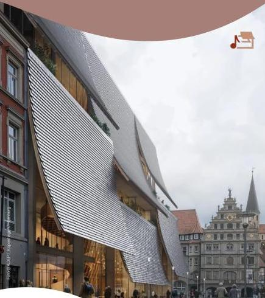

Am Gewandhaus entsteht ein neuer Kultur- und Begegnungsort – mit Konzertsaal und der Städtischen Musikschule.
Folge uns
Sei dabei, bevor das Haus öffnet. Hinter den Kulissen, Meilensteine, Menschen und Musik aus Braunschweig.
Das Haus der Musik wird unterstützt vom Konzert- und Förderverein der Städtischen Musikschule Braunschweig e. V.